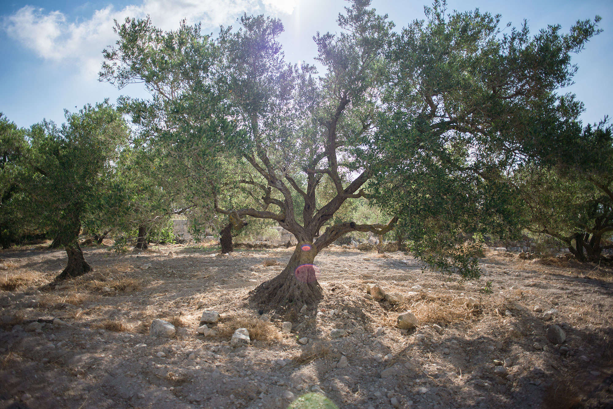

The Olive Tree provides support to numerous families. These families live and thrive off of the produce that is culitvated from the tree. The tree is so important to some people that they may even go as far as to consider it as a member of their family.